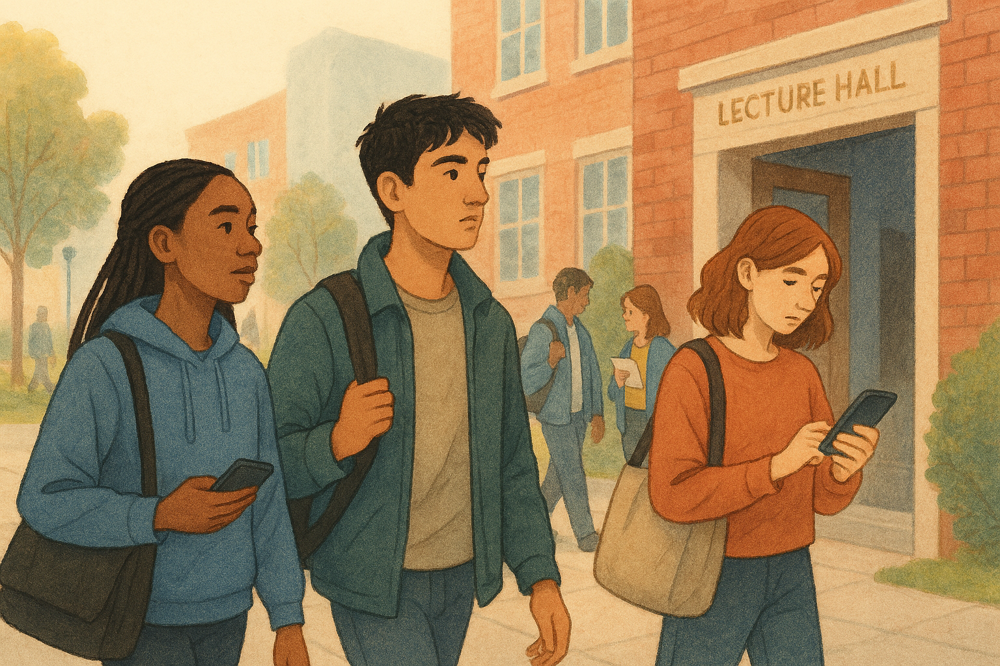
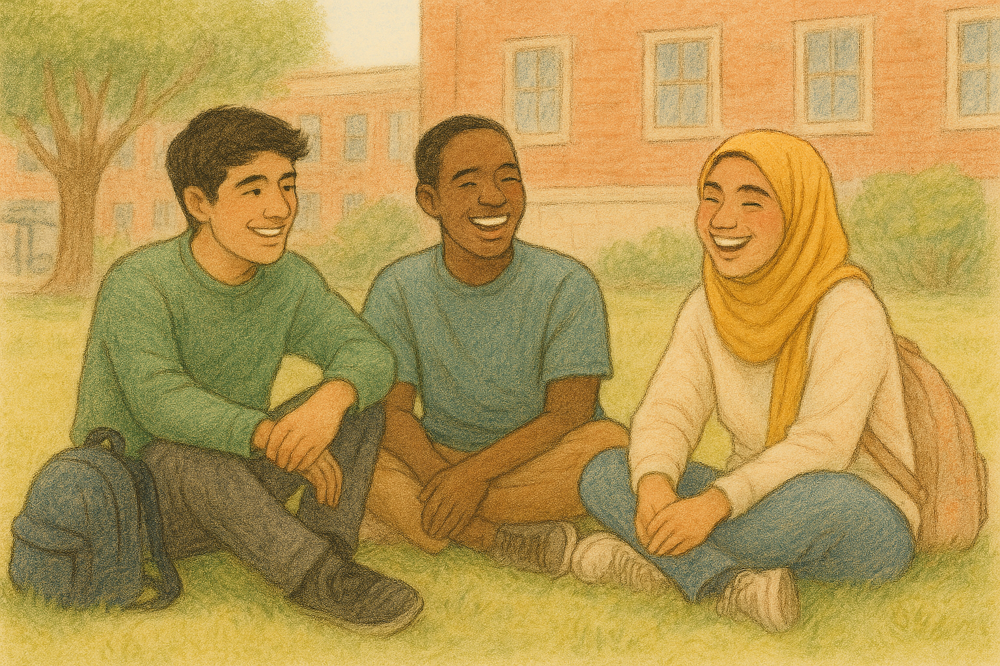

No one tells 16–17 year olds this — but they should.
Your future doesn’t start at 18. It starts here.
If this all feels new, you’re in the right place.
Meet your FirstGen buddy →Get 1:1 support from someone who’s been there.

By the numbers
UK figures on first-in-family students — with the sources, so you can check us.
What FirstGen is
University can shift things in quiet but powerful ways. It’s not just about lectures or a degree — it’s the space it gives you to grow into yourself. You start meeting people who think differently, ask new questions, and see paths you didn’t know existed. Little by little, your world gets bigger, and so does your confidence in moving through it.
What really makes the difference is choice. University can open doors — to careers, ideas, and opportunities that might not have felt reachable before. It doesn’t hand you a perfect future, but it gives you tools, support, and belief in yourself to build one. And for a lot of people, that feeling of “I can do this” stays with them long after graduation.
It stretches you in ways you didn’t even know you needed — through conversations, challenges, and little moments that stick. You learn how to ask questions, make mistakes, and keep going anyway, and you start realising you belong in spaces you might never have pictured yourself in before.
Who it's for
FirstGen is for anyone forging a path without a roadmap — students, early-career professionals, and builders who are the first in their family to do what they’re doing. Whether you’re breaking into a new industry, learning how work really works, or simply looking for people who get it, FirstGen is here for those who want guidance, community, and confidence as they move forward.
Voices
Real words from UK first-generation students.

“University feels like navigating through the dark, whilst others have a torch.”

Things to think about
Five things worth weighing up before you pick a uni — no rush, no right answer.
-
📚 Course & study
- What subjects genuinely keep your interest (even on a bad day).
- How you like to learn — coursework, exams, practical work, discussion.
- What support is available if you struggle or need extra help.
-
🏫 The university itself
- Size: big and busy, or smaller and quieter?
- Location: close to home or a fresh start somewhere new.
- What student life is like outside lectures (societies, support services, spaces to relax).
-
💷 Money & practical stuff
- How student finance works (and what you don’t have to pay upfront).
- Cost of living in different cities.
- Budgeting basics — rent, food, travel, little extras.
-
🧠 Support & belonging
- Mentoring, first‑gen networks, or transition programmes.
- Mental health and wellbeing support.
- Whether the place feels welcoming to you, not just impressive on paper.
-
🌱 Life after university
- Careers support, work placements, and graduate outcomes.
- Skills you’ll gain beyond the degree — confidence, independence, problem‑solving.
- How this step could open options, even if you’re not sure exactly where you’re heading yet.
Meet a buddy
“I didn’t realise how confusing university would feel before I got there. Everyone else seemed to know the rules — how lectures worked, who to ask for help, what ‘office hours’ even meant — and I felt like I’d missed a handbook. I wish I’d known it was normal to feel lost for a while.”
“Now, I help with the stuff no one explains properly: choosing modules, asking for support without feeling awkward, and figuring things out when you’re not sure uni is for you yet. You don’t need to have it all planned — we can take it one step at a time.”
Resources we trust
- UCAS — First-generation students — clear, practical guidance on applying to university, contextual offers, bursaries, and the support first-in-family students can access.
- FirstGens — UK-based mentoring, workshops, and community built specifically for first-generation students navigating university and early careers.
- The Sutton Trust — research, programmes, and policy work focused on social mobility, including access to university and career opportunities for students from under-represented backgrounds.
You belong here.
It takes less than a minute to start.
Get matched with a buddy →Built with care
FirstGen believes in giving everyone an equal opportunity from all backgrounds. That’s why this website uses dyslexia and ADHD friendly font and uses a colour scheme that is friendly for visually impaired people.
Built by
Coordinator: replace with your team's tagline + roll-call.
- Project Coordinator — name
- Software Developers — names
- Visual Designers — names
- Copywriters — names
- Researcher — name
- Pitch Lead — name
- Accessibility Champion — name